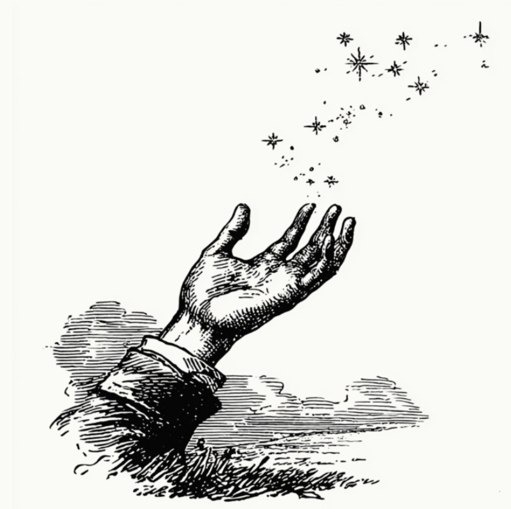

Essays
va
Inaccurate? Even better.

In the diagrams for the Resistant Atlas: Names of the Sun, the tilt of the summer vs. winter axes is not accurate to how the sun actually “moves” astronomically; the arcs are not at a tilt, they are at a displacement. But I made them tilt because that’s how it seems from our vantage point on Earth, and the way things seem to be is much more important to understand than how they actually are.
There is a point to be made behind why this map tracks the sun based on our imagination or our experience when there exists a scientifically accurate, legible model of the sun used in architectural engineering.
Modern astronomy – what we see in scientific illustrations that depict the accurate and mathematical paths and trajectories of the cosmos – is not a reflection of our direct human experience. They do not even occur on our scale. They are not based on our sight, our natural sense of space, our natural sense of movement. So it comes as no surprise that we are completely divorced from our surroundings and rely on a satellite’s sense of time and space. What am I supposed to do with the fact that the sun is in the center? Or if the Earth is in the center? How does that change the fact that I see the sun rise in the East and set in the West?
Sure, modern astronomy is the truth, but it must be refitted into our intuitive understanding of the world. In modern astronomy, our earlier concepts of the world are looked down upon; even laughed at. Haha, how could they really think the Earth was flat? Or that the sun rotated around the Earth? What idiots! That’s like astronomy 101!
But they operated based on intuition, and the feeling of being centered, and seeing the sun travel from East to West was a clear reflection of the direct human experience.
The point of this argument is not to deny modern research, only to put it in perspective.
To contextualize this, let’s look at some milestones in the history of astronomy. The Greeks persisted in the Earth-centered view even after scientists like Aristarchus of Samos (c. 310–264 BC) declared it was the Earth moving around the sun because the Greeks felt like man was connected to the universe and at the center of it, placed there by God. The Church backed this because it was beneficial for them to adhere to the philosophy of humans being “chosen” somehow.
Then, the Copernican revolution. It brought science into the humanities. However, the mechanics of the cosmos are not the only way to see reality. They do not make up all of human nature, or history, or cognition. If for thousands and thousands of years, everything we knew and know came from the sky, what sky was it? It certainly wasn’t the sky drawn by satellites but the sky that we saw and understood with our eyes. So to understand the way we think, we have to see that sky again.
What’s interesting is that sun-centered and Earth-centered models don’t actually contradict each other. They are two sides of the same coin because they both had to arrive at the same conclusions: that the sun makes the day and the absence of it makes the night, and everything else relies on that. The two ways of thought: one determined by technology and an accurate God-view model, and the other by direct human experience.
Imagine you attend a Broadway show, a depiction of Romeo and Juliet. You’re deeply moved by this show, even brought to tears. The play affects your life profoundly. You find yourself amazed by the real effect it had on your life.
Will that effect change if, a month later, you decided to follow the actors backstage and inquired about their real lives? Would it be of any benefit to you to know the actors don’t have any romantic chemistry offstage? That ‘Juliet’ is actually married to someone else! That she’s older than ‘Romeo,’ and that she actually looks down on him as an actor.
Would that change the effect, the wonder, the sparkle you had in your eyes the first time you saw it? Would it change any of the epiphanies you had in your own life or the way the story played out?
The way humans untangled the mysteries and patterns of the sky, the way they drew their culture from it, their mathematics, their language, their psychology, their travel, their daily lives, and the way it played into their folklore, was the blueprint to everything we know today. The way we’ve drawn time into years, months, weeks, days, hours, minutes. The way we know the compass, latitude, longitude, the way we’ve made our devices, the way we imagine scale, and science, and religion, all came from the stories that we wove from the sky. To push all that aside and replace it in schools with modern astronomy leaves a huge gap in human understanding. Let’s not write it off because of its mathematical inconsistencies.
Anyway, the point is that these maps aren’t meant to take you away from technology, of course, we need Google Maps and the time dictated by Greenwich, but they are meant to put it all into context.